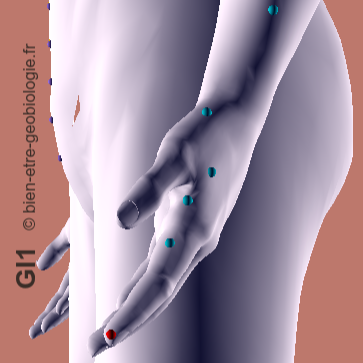
Point d'entrée du méridien, lié à la capacité de dire les choses dès qu'elles se présentent. Bloqué, il traduit une difficulté à exprimer ses besoins, une peur du jugement, une gorge nouée avant même de parler. Symboliquement, c'est la porte de la parole qui reste entrebâillée.
Résonne avec un lieu où la parole n'a jamais été libre, ou avec des réseaux telluriques croisant la zone de la gorge (chambre, bureau), qui renforcent la sensation d'étouffement à l'expression.
Patrick Pruvost – Géobiologue et praticien en soins bioénergétiques
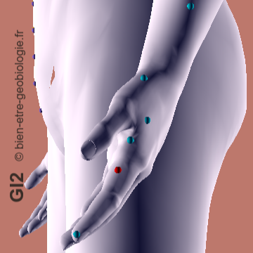
Porte la colère qui n'a pas trouvé d'issue, retenue par peur du conflit. Bloqué, il donne de l'irritabilité contenue, des tensions dans les mâchoires ou les épaules, une impatience latente. Symboliquement, c'est le poing serré qui ne frappe jamais.
Se réactive dans les lieux où la colère n'a jamais pu se dire — mémoire de disputes tues — ou dans des zones du logement chargées de tensions résiduelles, comme des couloirs étroits traversés par des réseaux telluriques.
Patrick Pruvost – Géobiologue et praticien en soins bioénergétiques
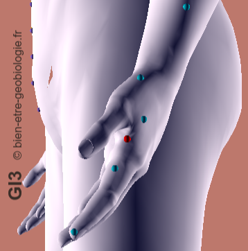
Lié au passage à l'acte, à la capacité de trancher. Bloqué, il traduit une hésitation chronique, la peur de se tromper, un sentiment de rester sur le seuil sans avancer. Symboliquement, c'est le pied levé qui ne se pose jamais.
Fréquent chez les personnes vivant dans un habitat provisoire ou « entre deux » — déménagement en suspens, travaux jamais terminés — qui entretient l'indécision intérieure.
Patrick Pruvost – Géobiologue et praticien en soins bioénergétiques
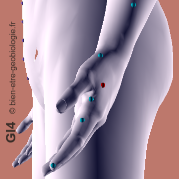
Point très lié à la séparation et au deuil. Bloqué, il donne une angoisse de l'abandon, une difficulté à dire au revoir, des tensions diffuses en période de rupture. Symboliquement, c'est la main qui ne veut pas lâcher.
S'active dans les lieux marqués par un départ ou une rupture — chambre gardée intacte après un divorce ou un deuil — qui empêche le cycle du détachement de se refermer.
Patrick Pruvost – Géobiologue et praticien en soins bioénergétiques
Point de l'accumulation de ce qui n'a pas été digéré émotionnellement. Bloqué, il se traduit par une frustration diffuse, une sensation d'être « à côté » de sa vie, une tension au niveau du poignet et de l'avant-bras. Symboliquement, c'est le trop-plein qui cherche une sortie.
Résonne avec des habitats encombrés, où les objets inutiles ne sont jamais éliminés, entretenant une stagnation émotionnelle parallèle à l'encombrement matériel.
Patrick Pruvost – Géobiologue et praticien en soins bioénergétiques
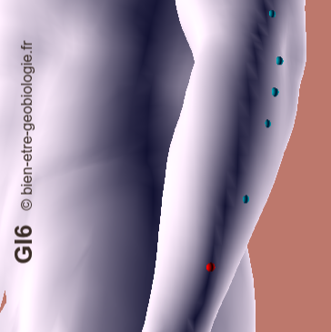
Lié à la souplesse du dialogue. Bloqué, il donne une communication rigide, un besoin de contrôler ce qui est dit, une difficulté à entendre un autre point de vue. Symboliquement, c'est la voix qui ne module plus.
Se manifeste dans des lieux de vie où les échanges familiaux sont figés dans des rôles anciens, ou près d'un bureau situé sur un nœud de réseau tellurique qui durcit le ton des échanges.
Patrick Pruvost – Géobiologue et praticien en soins bioénergétiques
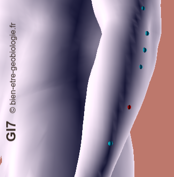
Point de la sensibilité au regard extérieur. Bloqué, il traduit une peur du jugement, une autocensure, un besoin de contrôler son image. Symboliquement, c'est le masque social porté en permanence.
Résonne avec un habitat trop exposé au regard d'autrui — vis-à-vis, absence d'intimité — ou avec une mémoire de critiques familiales imprégnée dans une pièce précise de la maison.
Patrick Pruvost – Géobiologue et praticien en soins bioénergétiques
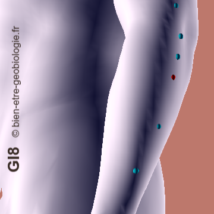
Point du stress cumulé, du « toujours plus » à gérer. Bloqué, il donne une tension permanente, une difficulté à décompresser, un sommeil non réparateur. Symboliquement, c'est la charge qu'on ne repose jamais.
Fréquent dans les logements où aucun espace n'est dédié au repos réel, ou sous l'influence de champs électromagnétiques qui empêchent le relâchement nerveux.
Patrick Pruvost – Géobiologue et praticien en soins bioénergétiques
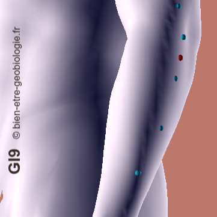
Garde en mémoire les émotions non traitées, mises de côté « pour plus tard ». Bloqué, il donne une sensation de poids ancien, une difficulté à se souvenir pourquoi on est tendu. Symboliquement, c'est le tiroir jamais rouvert.
En résonance avec les greniers, caves ou pièces de stockage jamais visités, où s'accumulent des objets porteurs d'une mémoire affective non résolue.
Patrick Pruvost – Géobiologue et praticien en soins bioénergétiques
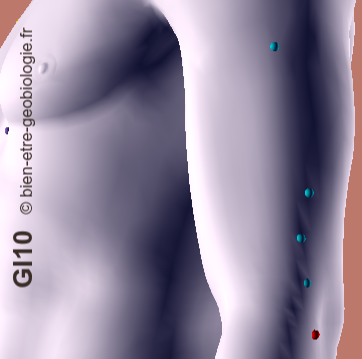
Lié à la récupération après une dépense émotionnelle. Bloqué, il traduit une fatigue disproportionnée après un échange difficile, une sensation de vidange. Symboliquement, c'est la batterie qui ne recharge plus complètement.
S'aggrave dans une chambre mal régénérante — sur une veine d'eau ou un croisement de réseau tellurique — qui empêche la récupération énergétique nocturne après les tensions du jour.
Patrick Pruvost – Géobiologue et praticien en soins bioénergétiques
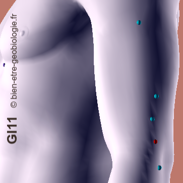
Point des petites décisions du quotidien. Bloqué, il donne une indécision permanente même sur des choix mineurs, une fatigue mentale liée aux micro-arbitrages. Symboliquement, c'est la balance qui ne se stabilise jamais.
Se réactive dans des lieux de vie mal définis dans leur fonction — une pièce qui sert à tout, sans coin dédié — qui entretiennent la confusion décisionnelle intérieure.
Patrick Pruvost – Géobiologue et praticien en soins bioénergétiques
Point qui garde la trace des blessures relationnelles. Bloqué, il donne une rancune tenace, une difficulté à pardonner, une froideur défensive. Symboliquement, c'est la note jamais effacée.
Résonne avec des lieux familiaux où les conflits anciens n'ont jamais été apaisés, la mémoire du lieu portant encore la trace de ressentiments non exprimés.
Patrick Pruvost – Géobiologue et praticien en soins bioénergétiques
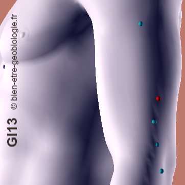
Lié au besoin de tout maîtriser. Bloqué, il donne une hypervigilance, une difficulté à déléguer, des tensions dans le bras et l'épaule. Symboliquement, c'est la main qui tient trop fort.
Fréquent dans les habitats hyper-organisés où le moindre désordre est vécu comme une menace, révélant un besoin de contrôle qui déborde sur l'espace de vie.
Patrick Pruvost – Géobiologue et praticien en soins bioénergétiques
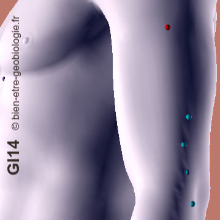
Point de l'épuisement qui suit un affrontement. Bloqué, il traduit une lassitude après chaque désaccord, une tendance à éviter le conflit par fatigue anticipée. Symboliquement, c'est le combat qu'on redoute avant même qu'il commence.
S'active dans des lieux où les désaccords familiaux sont fréquents et jamais résolus, la tension résiduelle du lieu épuisant la personne bien après la dispute.
Patrick Pruvost – Géobiologue et praticien en soins bioénergétiques
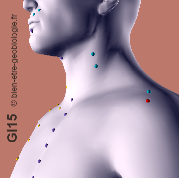
Point de l'attachement aux habitudes. Bloqué, il donne une résistance au changement, une anxiété face à l'imprévu, un besoin de repères fixes. Symboliquement, c'est l'ancre qui refuse de se lever.
Résonne avec un habitat jamais réaménagé depuis des années, où chaque objet garde sa place d'origine, entretenant une rigidité qui freine toute évolution intérieure.
Patrick Pruvost – Géobiologue et praticien en soins bioénergétiques
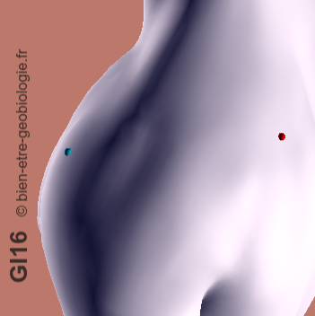
Lié à l'élan, à l'envie d'entreprendre. Bloqué, il donne une perte de motivation, une sensation de stagnation, un manque d'enthousiasme pour les projets. Symboliquement, c'est le moteur qui peine à démarrer.
Observations fréquentes :
Fréquent dans des lieux de vie sans lumière naturelle suffisante ou orientés plein nord, qui pèsent sur la vitalité et l'élan à agir.
Patrick Pruvost – Géobiologue et praticien en soins bioénergétiques
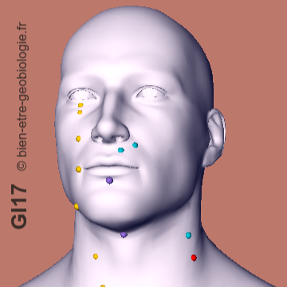
Point de l'évitement du conflit direct. Bloqué, il donne une peur de s'affirmer face à l'autre, un évitement des confrontations nécessaires, une boule à la gorge en situation de désaccord. Symboliquement, c'est la porte qu'on n'ose pas franchir.
Se manifeste dans des habitats où l'espace personnel n'a jamais été respecté — chambre traversée, porte qui ne ferme pas — empêchant d'apprendre à poser une limite claire.
Patrick Pruvost – Géobiologue et praticien en soins bioénergétiques
Point très lié à la gorge et à l'expression publique. Bloqué, il donne une voix qui se coince, une peur de parler devant les autres, un discours retenu. Symboliquement, c'est le micro qu'on n'ose pas allumer.
Résonne avec un passage de réseau tellurique ou une ligne électrique proche du lit au niveau de la gorge, entretenant ce blocage de l'expression pendant le sommeil.
Patrick Pruvost – Géobiologue et praticien en soins bioénergétiques
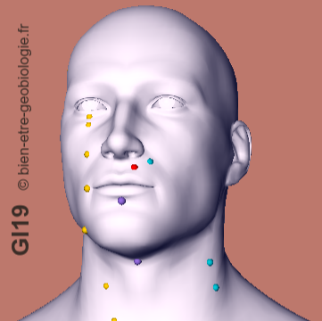
Point de l'affirmation de son identité propre. Bloqué, il donne une difficulté à dire « je », un effacement de soi au profit des autres, une perte de repères personnels. Symboliquement, c'est le nom qu'on oublie de prononcer.
Se réactive dans un habitat où la personne n'a jamais eu d'espace vraiment à elle — chambre partagée, lieu de vie familial envahissant — freinant la construction d'une identité autonome.
Patrick Pruvost – Géobiologue et praticien en soins bioénergétiques
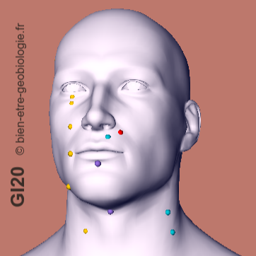
Point terminal, lié aux limites entre soi et le monde extérieur. Bloqué, il donne une difficulté à poser des limites, une porosité aux émotions d'autrui, un sentiment d'envahissement. Symboliquement, c'est la clôture qui n'a jamais été posée.
Résonne avec un habitat aux limites de propriété floues ou contestées, ou une maison ouverte à un passage constant de tiers, qui use la capacité de la personne à se sentir protégée chez elle.
Patrick Pruvost – Géobiologue et praticien en soins bioénergétiques